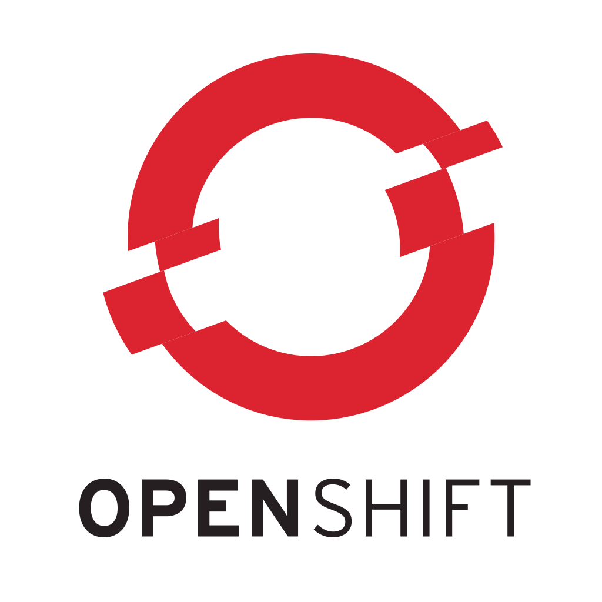
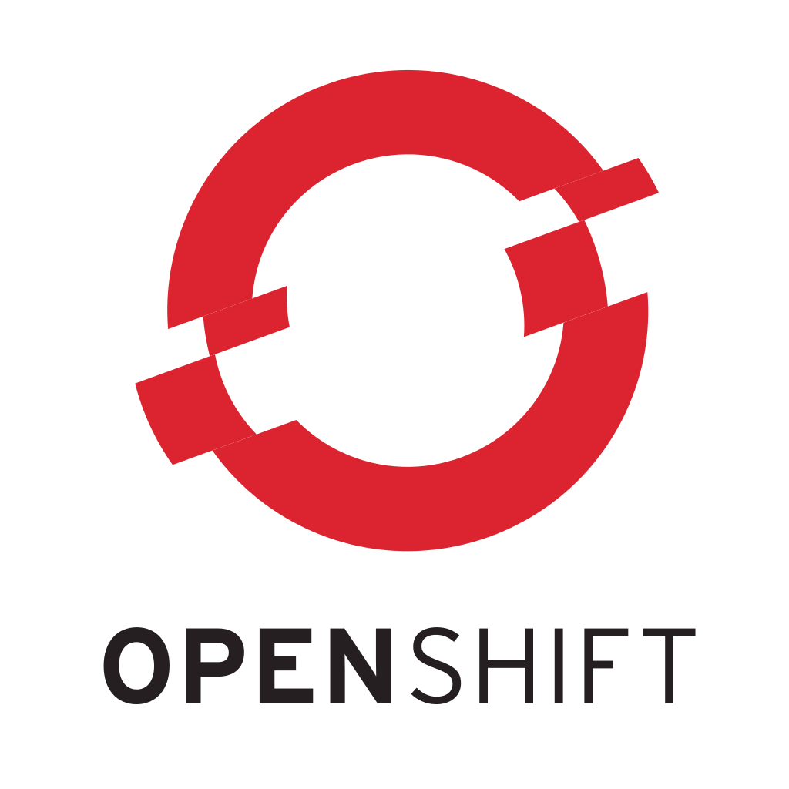

Docker & OpenShift
voor Ventouris
 

Containeri-watte?
Presentatiemateriaal van Docker, Inc
The Challenge

The Challenge - Ventouris
The Challenge - Ventouris
The Matrix from Hell

Onze oplossing?
Onze oplossing
Onze oplossing
Onze oplossing
Onze oplossing
TODO lopende kost van manuele installs, communicatie met ops, puppet, ...,
Cargo Transport Pre-1960

Also a Matrix from Hell

Solution: Intermodal Shipping Container

Docker is a Container System for Code

Docker Eliminates the Matrix from Hell

Demo time!
Disclaimer: All code is POC code
- Oracle XE
- Upgrade an app java 7 -> java 8?
- Ventouris
OpenShi-watte?
OpenShift
Based on top of Docker containers and the Kubernetes container cluster manager, OpenShift 3 adds developer and operational centric tools to enable rapid application development, easy deployment and scaling, and long-term lifecycle maintenance for small and large teams and applications.
Demo time!
Disclaimer: All code is POC code
- OpenShift echo-pod-name-app + crashing app
- OpenShift Ventouris
- OpenShift Jenkins pipeline
Wat hebben we niet gedaan
-
Exploitatie & Control-M
- Verbindingen over HTTP
- → geen probleem?
- Queues en XA-transacties
- Volumes
-
Stapsgewijze refactoring
- → geen weet van andere dependencies
?
Afbeeldingen
- Docker slideshow by dotCloud, http://www.slideshare.net/dotCloud/docker-intro-november
- Ant on leaf by Luke Elstad - Own Work in MN, CC BY 2.5, https://commons.wikimedia.org/w/index.php?curid=1349504
- Ant trail by Aleksey Gorov, iStock
- Termite mound by Lothar Herzog - Kassel, Germany, CC BY 2.0, via Wikimedia Commons